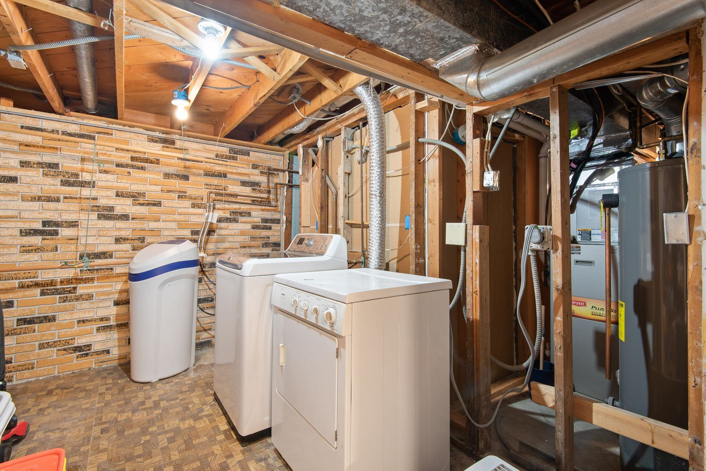

Most gas water heaters in Eugene, OR work the same basic way. Gas enters through a control valve that doubles as the thermostat and feeds a burner beneath the tank, and the hot exhaust travels up a flue through the middle of the tank and out through the vent. A thermocouple, or a flame sensor on newer electronic models, tells the valve a flame is present; without that signal, the valve closes for safety. The design is dependable, but it has a few predictable weak spots. Thermocouples wear out, pilot tubes and burner ports clog, the flame arrestor screen at the base packs up with lint and dust, control valves fail, and vents lose their draft.
Every gas water heater call starts with safety and then moves to testing. If there is a gas odor, leave the home first, call the gas utility from outside, and do not operate switches or try to relight anything. Once the area is safe, our Eugene technicians work through the heater systematically: millivolt readings on the thermocouple, a close look at the pilot and main burner flames, gas pressure at the control valve, a draft test to make sure exhaust is not spilling back, and a CO check around the appliance. Scorch marks at the burner access, rust flakes on the burner, and a lazy yellow flame each point to a different problem, and we chase down the right one.
Some gas heaters need a quick part swap, and some need an honest conversation. We handle both. Thermocouples, flame sensors, pilot assemblies, hot surface igniters, gas valves, and burner cleaning are routine repairs, and we correct venting faults and flush sediment during the same visit when needed. If the tank is leaking, rusting through, or past about ten to twelve years with a major failure, we will explain why replacement makes more sense. Our installations cover like-for-like swaps and upgrades to power vent or high-efficiency models, with correct gas line sizing, sediment traps, expansion tanks, drain pans, and seismic strapping wherever required. Call (541) 200-6630 and we will get your hot water back.
Most of our service calls are for Water Heater Repair in Eugene and Water Heater Installation in Eugene. Either is a good place to start.

How to Tell Something Is Wrong
A heater that is starting to struggle rarely hides it for long, and the clues are easy to spot once you know them. If any of the following sound familiar, it's worth having the unit checked:
- Hot water that runs out faster than it used to
- No hot water at all, with the burner never firing
- A pilot light that will not stay lit
- A tank that pops and bangs while it heats, a classic sign of sediment
- Water pooling around the base of the heater
- Any smell of gas around the appliance, which calls for leaving and phoning the gas utility
- Exhaust odor, rust, or moisture around the draft hood and vent pipe
- Soot or scorch marks around the burner access door
Small Symptoms, Big Consequences
Most water heater failures start small: a popping sound from sediment, a damp spot under the drain valve, or a shower that goes lukewarm a few minutes sooner each week. Call Eugene Water Heater at (541) 200-6630 at the first sign of trouble.
Talk to Us About Gas Water Heater Services
Our experienced technicians are standing by to help.
Call (541) 200-6630 NowFrequently Asked Questions About Gas Water Heater Services
Why Hire a Professional for Gas Water Heater Services?
Start with the hazards. Fuel piping, an open flame, and exhaust laced with carbon monoxide come with every gas water heater. A loose flare or threaded joint can leak gas, a vent that is disconnected or poorly sloped can spill exhaust back into the room, and a gas valve installed without a leak test is a risk you cannot see. Then there is the diagnostic side: a pilot that goes out can mean a weak thermocouple, a dirty pilot orifice, a clogged flame arrestor, a draft problem, or a failing gas valve, and working through them by guesswork is slow and costly.
What a trained technician brings is certainty. We test instead of guessing, from thermocouple millivolt readings and burner flame checks to gas pressure at the valve and a draft test at the hood. Before we leave, every connection is leak-tested, the vent is confirmed to carry exhaust outside, and CO is checked. And because some gas heaters are not worth another repair, we give you a straight answer on repair versus replacement first, then handle either one with correct venting, gas piping, and the code items your installation requires.
Step by Step: How a Visit Works
Our workflow is simple and thorough, so nothing gets missed between the fuel supply and the relief line. Here's exactly how a typical visit unfolds:
Combustion & Component Testing
We start with a leak check and a carbon monoxide reading. Then we measure thermocouple output, inspect the pilot and burner, read gas pressure, and test the vent's draft.
Repair or Replace, Explained
No guesswork on the bill. We explain the fault and the fix, quote it up front, and give you an honest repair-versus-replace answer on older heaters.
Expert Repair or Replacement
Most fixes happen right then, from a new thermocouple to a cleaned burner or corrected vent. New installs include gas line work, a sediment trap, and the code items your home needs.
Verified Safe Operation
A gas appliance is not finished until it is proven safe. We leak-test the connections, verify draft and flame, check for carbon monoxide, and set the temperature at a safe level.
Tips to Keep Your Water Heater Healthy
Most of the failures we see could have been delayed for years with basic upkeep. Follow these tips from our technicians:
- Flush the tank on a regular schedule so sediment never bakes onto the bottom
- Never store flammable liquids near a gas water heater
- Set the gas valve near 120 degrees, because hotter water costs more and can scald
- Replace a spent anode rod before the tank itself starts to rust
- Check that the vent connector is secure and rising toward the chimney or flue
- Install carbon monoxide alarms on every level of the home and test them monthly
- Clean dust from around the base so the burner gets plenty of combustion air
Doing It Yourself vs. Hiring a Technician
Some simple checks are fine to do yourself, but most water heater repairs benefit from professional tools, training, and experience. A side-by-side look:
| Consideration | Doing It Yourself | Hiring a Pro |
|---|---|---|
| Finding the Fault | Replace the thermocouple and hope | Millivolt, pressure, and draft tests find the cause |
| Gas Leaks | No leak detection after the work | Gas piping verified tight and sound |
| Venting & CO | Draft and spillage go untested | Spillage and CO checked at the appliance |
| Code Compliance | Straps, pan, and expansion tank missed | Permit handled where required |
| Tank Condition | Anode rod ignored | Tank and anode inspected during service |
| Result | Pilot goes out again next week | Root cause fixed and verified safe |
Talk to Our Gas Water Heater Services Team
Cold showers and damp floors don't get better on their own. Eugene Water Heater can have a technician headed your way soon.
Call (541) 200-6630 NowGas Water Heater Services Across the Eugene Area
We bring gas water heater services to homes and businesses in town and across the nearby communities. Pick your area to see local details.